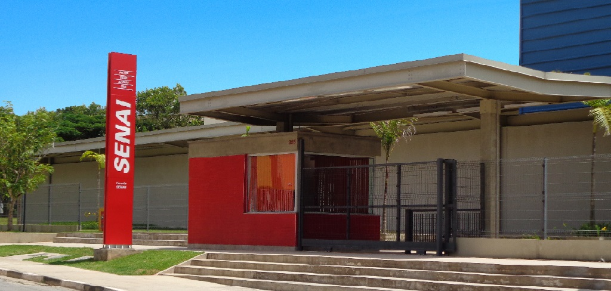
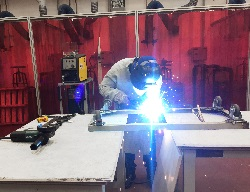
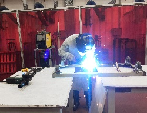

Escola SENAI "Ricardo Lerner"
O Serviço Nacional de Aprendizagem Industrial (SENAI) foi criado em 22 de janeiro de 1942, pelo Decreto-Lei 4.048 do então presidente Getúlio Vargas, com a missão de formar profissionais para a indústria nacional. Há quase 75 anos, já estava claro que, sem educação profissional de qualidade, o Brasil não teria uma indústria forte e nem alcançaria o desenvolvimento sustentado.
Inaugurada em 25 de agosto de 1962, a Escola SENAI de Sorocaba recebeu o nome de "Gaspar Ricardo Júnior", em homenagem ao ex-diretor da Estrada de Ferro Sorocabana.
Em 2005 a Escola foi reinaugurada após uma reforma radical e ampla modernização, sendo equipada com novos laboratórios e oficinas que incorporaram a mais moderna tecnologia. Sobre esta base a Escola pôde aprimorar seu atendimento, passando a oferecer novos cursos de nível técnico e de formação inicial e continuada.
Em 2012 iniciou a primeira turma do Curso Superior de Tecnologia em Fabricação Mecânica inaugurando um novo nível de formação, para atendermos a demanda de mercado deste profissional.
Em 2016 iniciaram duas turmas de Pós-Graduação Graduação Lato Sensu: Otimização e Gerenciamento da Manufatura e Automação Industrial.

 
MECÂNICA
ELETRÔNICA
SOLDAGEM
Maquinas da mecânica
Sala de aula Eletrônica
Área da Soldagem

MECÂNICA
ELETRÔNICA
SOLDAGEM
Maquinas da mecânica
Sala de aula Eletrônica
Área da Soldagem
Atualmente a Escola Senai Oferece esses Cursos
Cursos de Aprendizagem Industrial (CAI): Almoxarife, Assistente Administrativo, Eletricista de Manutenção Eletroeletrônica, Ferramenteiro de Corte, Dobra e Repuxo, Mecânico de Usinagem e Operador de Produção Industrial, sendo o último realizado no sistema dual, com a parte prática desenvolvida na empresa.
Curso Técnico (CT): Mecatrônica;
Curso Superior de Tecnologia (CST): Tecnologia em Fabricação Mecânica;
Cursos de Pós-Graduação Lato Sensu: Otimização e Gerenciamento da Manufatura e Automação Industrial;
Cursos de Formação Inicial e Continuada – Escola (FIC-E): Programas de curta duração abertos às empresas e à comunidade, distribuídos nas áreas: Automação, Eletroeletrônica, Gestão, Logística, Metalmecânica, Plástico, Refrigeração e Climatização, Segurança do Trabalho e Tecnologia da Informação;
Cursos de Formação Inicial e Continuada – Empresa Entidade (FIC-EE): Programas com foco na necessidade das empresas e comunitários em parceria com instituições públicas e privadas: Programa Comunitário de Formação Profissional (PCFP) e Programa SENAI “Escola de Vida e Trabalho” (EVT).
RUA DIREITA,955 - Cotia/SP
114628-1600